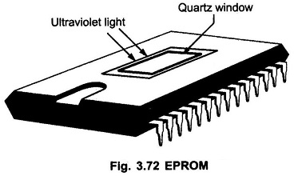

EPROM can be erased many times and reprogrammed as we like . ultraviolet light is passed in a specific frequency with a quartz window for around 40 minutes to erase the data . when it is to ultraviolet light,it wont retain the content , it is totally blank.
